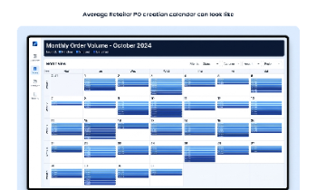
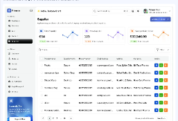
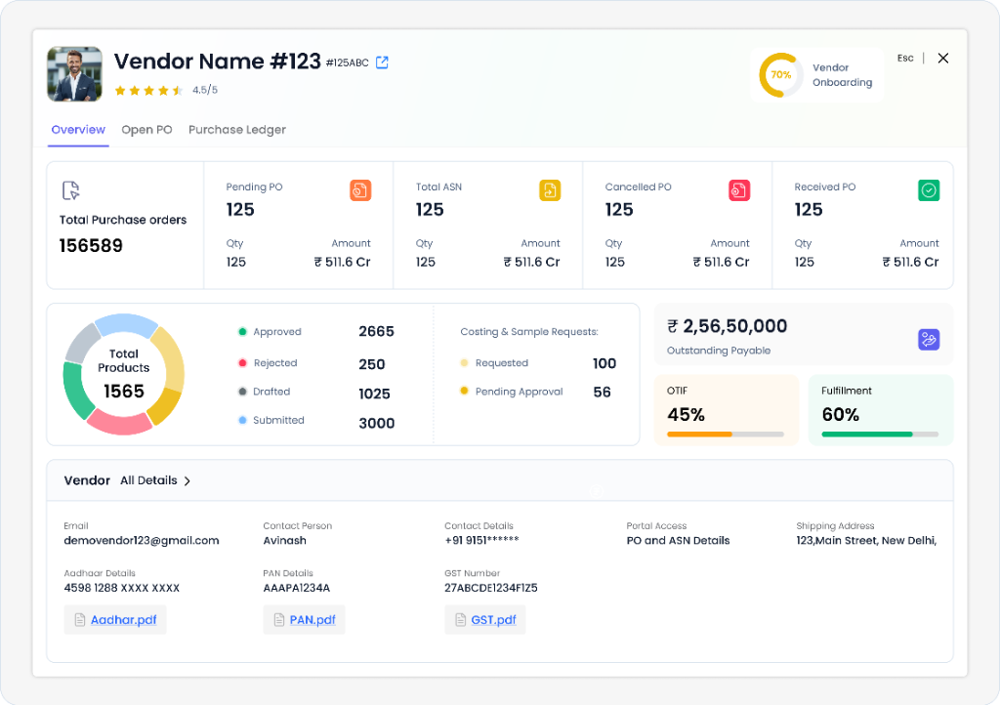

A design deep dive into transforming fragmented supplier telemetry into a high-density, centralized workspace directly integrated at the point of procurement decision-making.
Retailers run physical outlets, online stores, and warehouse facilities, processing high-volume POs coming from multiple channels. To support this scale, they need a system that does not tie them down to a single screen, layout, or feature.
Prior to our intervention, planners lacked context on vendors when attempting to evaluate their performance. In most cases, there was no single dashboard to show how they were doing, forcing teams to perform tedious manual navigation to gather basics.
Lack of unified visibility: evaluating a single supplier required cross-referencing multiple separate lists.
Through direct observation and interviews with retail planners, we mapped several systemic frictions preventing fast and accurate order placement.
Choosing a vendor without historical lead times or performance records. Planners manually compared vendors across separate Excel sheets, severely delaying order fulfillment.
Important vendor data is spread across different legacy modules. Planners have to open several tabs just to check basic contact info or verify payment ledger history.
During PO generation, there is no real-time indicator of a vendor's performance (e.g., OTIF rates, fulfillment rates) or outstanding payable status, making risk mitigation impossible.
Verifying supplier credentials like tax IDs (GST/PAN) and bank details is manual and slow, with no central repository for quick search and approval.

The new module must fit seamlessly into the existing Supplymint SaaS ecosystem, ensuring zero workflow disruption for active enterprise clients.
All vendor intelligence telemetry must be available at the click of a button from any screen in the platform.
The dashboard must operate using already-collected transaction history, without requiring additional vendor input.
Front-end layouts must be lightweight and easy to navigate for users on low-bandwidth warehouse connections.
The solution needed to be universal, scalable, and implementable anywhere supplier details appeared in the system—not tied to a single layout. This ruled out several initial ideas:
This led us to design a Unified Overlay Modal with Tabbed Telemetry, accessible universally via context clicks and global search.
Contextual Integrity: The backdrop remains visible, keeping the primary workspace intact.
Universal Trigger: Can be summoned from grids, search, or creation dialogs without reloading.
Information Density: Supports complex grids and charts within an optimized tabbed card structure.
Through interviews with 15+ procurement planners, we discovered key friction patterns:
Planners dealing with 10+ vendors need quick aggregate summaries, while those with 1-2 need complete transaction lists.
Retailers placed orders without checking current vendor contracts, causing post-facto price mismatches.
Delays in manually verifying GST/PAN credentials caused tax invoice errors and blocked input tax credits.

Secondary research revealed that 70% of user sessions involved constant tab toggling between Purchase Ledger and PO modules.
Our solution consolidated all order states, outstanding payables, OTIF rates, and onboarding metrics into a single, tabbed modal. Instead of navigating away, users click any supplier's name in the data grids to summon the modal instantly.
Consolidates supplier ratings, onboarding status, PO status breakdown, OTIF, and fulfillment scores, alongside core credentials (GST, PAN, Aadhaar, address).

Each tab directly addresses the operational gaps identified during research: Overview solves fragmented identity; Open PO and Purchase Ledger solve decision-time latency. Triggering it universally—directly from data grids—respects existing workflows without causing disruptive navigation context switches.
The result: Retailers never leave their tools to evaluate vendors. Decisions and transaction data exist in the same workspace.